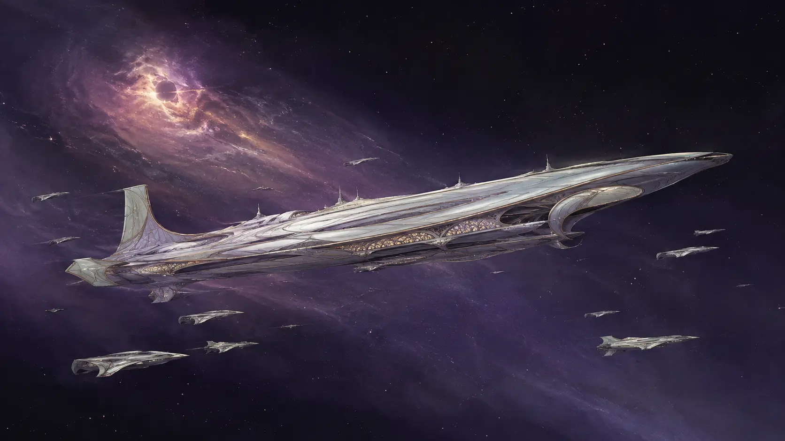

Letzte Stadt Aethyrs · Galaktischer Rand
Die Flotte
Eine verlorene Welt, bewahrt in Metall, Erinnerung und Pflicht.
01 · Das Kolonieschiff
Was Aethyr überlebte
Von der großen Exodusflotte erreichte nur ein Kolonieschiff die neue Galaxis. Es trägt mehr als Passagiere.
Archive, Saatgut, Kunstwerke, Werkstätten und die gesellschaftliche Ordnung Aethyrs wurden in seinem Inneren bewahrt. Das Schiff ist Transportmittel und Hauptstadt zugleich. Seine eleganten Außenlinien verbergen eine Welt, die für eine Reise gebaut wurde, deren Ende nie eintrat.
„Alles, was wir nicht mitnahmen, starb zweimal.“
Aeldir-Archivarin
02 · Gesellschaft an Bord
Die Kasten reisen weiter
Der Exodus löste das Kastensystem nicht auf. Gelehrte, Krieger, Handwerker, Sprecher und Dienende leben in klar zugeordneten Bereichen und erfüllen Aufgaben, die schon vor ihrer Geburt feststanden. Die Enge des Schiffs macht diese Ordnung sichtbar, aber sie hat sie nicht geschaffen.
Exoskelette prägen den Alltag. Schlichte Arbeitsrahmen bewegen Lasten durch die Werften, fein gearbeitete Systeme unterstützen Gelehrte und Sprecher, schwere Anzüge schützen die militärischen Sektionen. Technik gleicht nicht nur körperliche Schwäche aus. Sie zeigt, wo jemand hingehört.
03 · Ein fester Hafen
Nomaden mit einem Mittelpunkt
Viele Begleitschiffe reisen durch die Galaxis, sammeln Wissen und vertreten die Aeldir im Dominat. Das große Kolonieschiff selbst bleibt als fester Punkt am Rand der Galaxis verankert. Es kann gezielt angesteuert werden und bildet den Mittelpunkt eines ansonsten nomadischen Volkes.
Die Aeldir suchen weiterhin nach einer neuen Heimatwelt. Doch anders als die Terraner betrachten sie diese Suche nicht als Glaubenssatz. Sie ist ein langfristiges Vorhaben, geplant von einem Volk, das bereits einmal bewiesen hat, dass es Jahrzehnte vorausdenken kann.